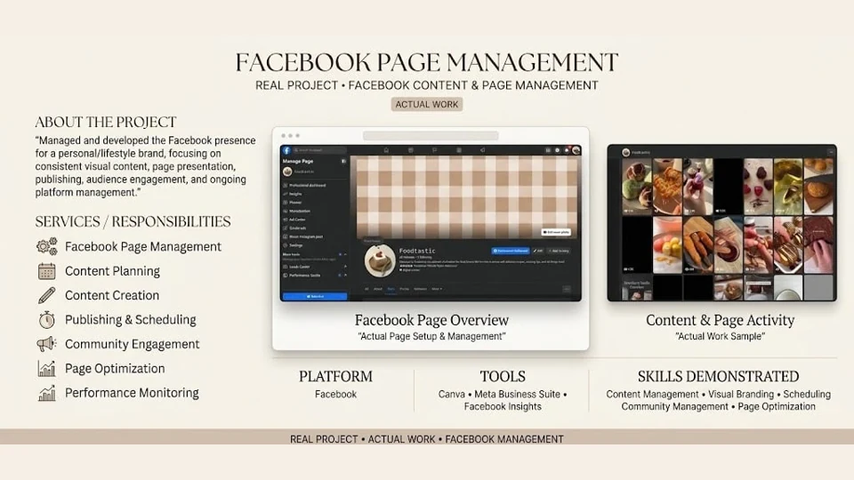
Explore project +Social media manager · Content & strategy
Hi, I’m Mae.
Content with
a purpose.A plan behind
every post.
I help businesses plan, create, and manage social content around who they want to reach and what they want people to do next.
Audience research · Content planning · Creation · Page management
Creativity. With purpose.Mae Fatima Magale
Know the audience✦Give content a purpose✦Review & refine
01 / Selected work
The work.
And the thinking.
Existing Facebook page work, a personal Figma project, and self-initiated concepts. Each one is labeled so you know exactly what you’re looking at.

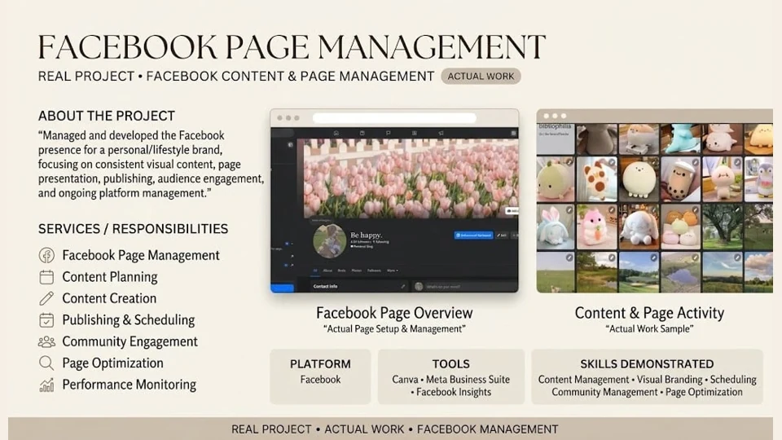
Explore project + Explore concept +
Explore concept +
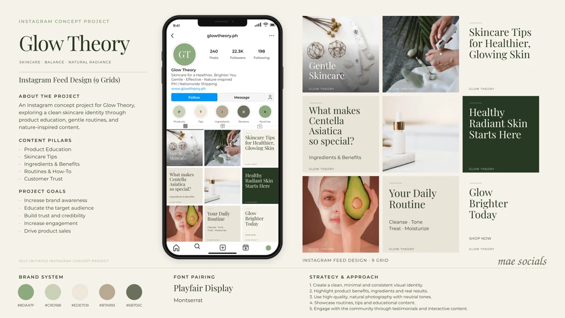
Explore concept +
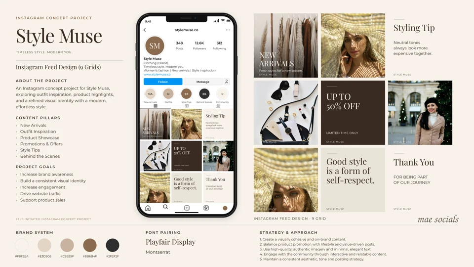
Explore concept +
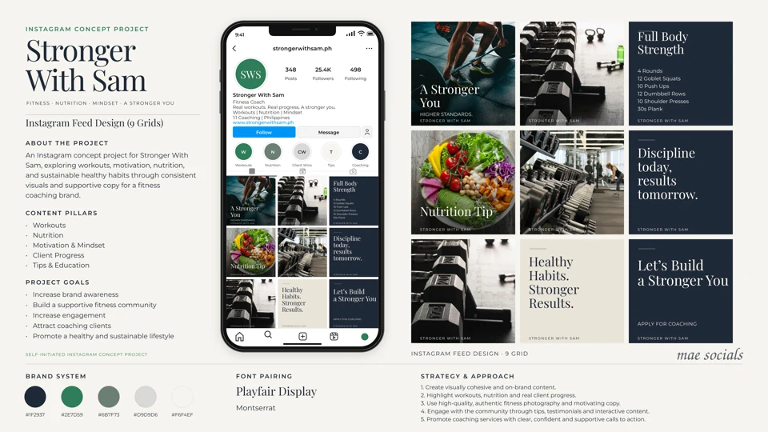
Explore concept +
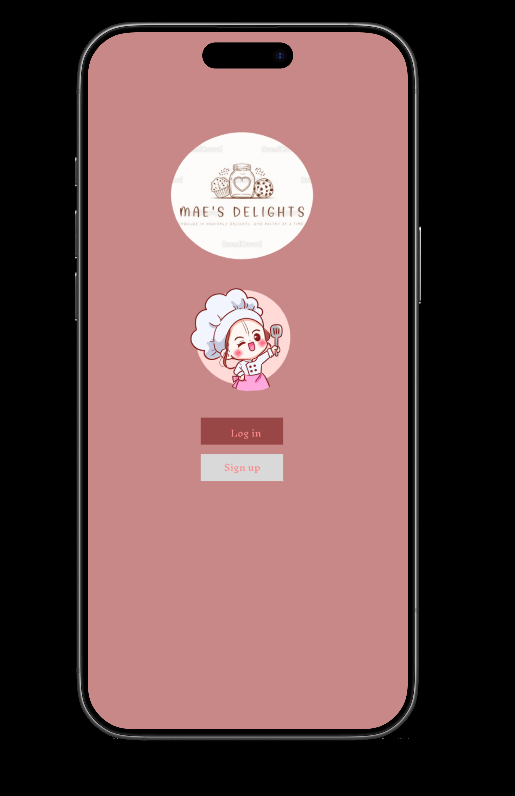
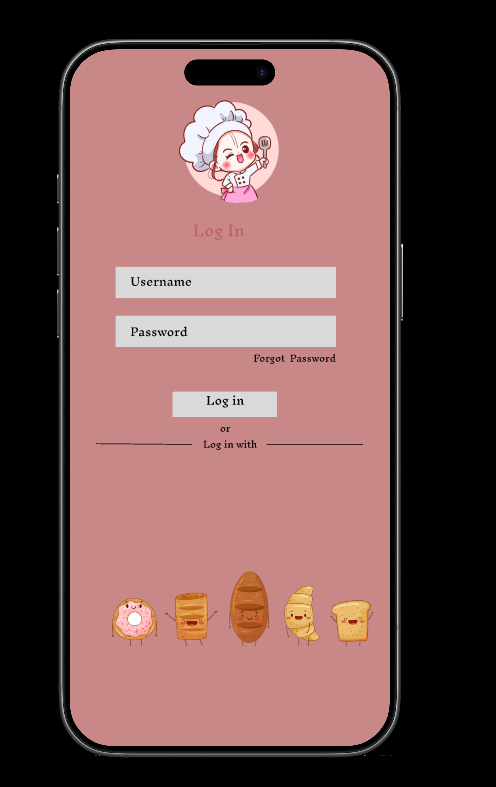
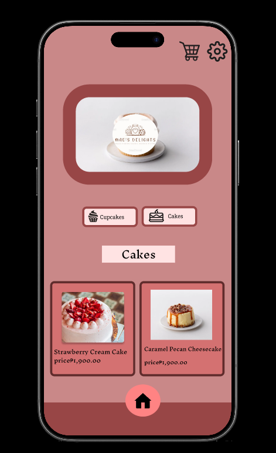
The Facebook screenshots document actual page work. The Instagram projects demonstrate my creative approach. I’m building my client experience, so I share the work and proposed thinking here without claiming growth, sales, or campaign results.
02 / The strategy behind the work
Four brands.
Four clear directions.
Choose a concept to explore its audience, content approach, sample audit, and 30-day plan. The thinking changes with the business.
These are proposed strategies around my existing concept artwork. Audience assumptions need validation, captions are unpublished samples, and the plans have not been run for clients. Stock photography, profile details, counts, offers, and example claims in the original boards are illustrative.
Café concept
Self-initiated project · Sample strategyBrew & Bean.
More than a nice feed.
A café concept with an inviting visual identity. The next question is practical: does the content help someone decide what to order and how to visit? Here’s the approach I would take.
A business goal before a posting plan
Make the café easy to discover, understand, and choose.
The concept focuses on specialty coffee, food pairings, and a welcoming space. I would give first-time visitors enough useful information to move from “this looks nice” to “I’d like to go.”
- Primary objective
- Encourage relevant local interest and clear visit or menu inquiries.
- Platform focus
- Instagram feed and Stories, with Facebook adaptations if included in scope.
- Brand voice
- Warm, straightforward, and welcoming. Describe the experience in everyday language.
- Creative direction
- Keep the forest green, warm neutrals, real photography, and readable editorial type.
Audience hypothesis · To validate with the business
Who the content could speak to
People near the café looking for a coffee stop, somewhere to catch up with a friend, or a comfortable place to spend a quiet hour.
They may want to know what’s on the menu, what it costs, where the café is, and what the space feels like before deciding to visit.
What I would check first
Ask the owner about regular customers, common questions, busiest times, and popular items. Review account insights and compare how nearby cafés explain their menus and visit information.
Wi-Fi, seating, accessibility, hours, and dietary options would only appear in content after the business confirms them.
Four pillars, each with a job to do
What to order
Drinks, menu explanations, and pairings. Help someone picture their first order.
The café experience
Space, atmosphere, and everyday moments. Show what a visit could feel like.
Behind the counter
Preparation and barista details. Make the care behind the product visible.
Plan a visit
Confirmed hours, location, menu links, and useful answers. Make the next step clear.
Format follows the message
Use a photo for a product detail, a carousel for useful information, a Reel for preparation or atmosphere, and Stories for questions and reminders.
One clear next step
Match the CTA to the post: save an idea, reply with a preference, open the confirmed menu, or ask a specific visit question.
Success metrics I would track · No results claimed
| Question | Metric | How it informs the next month |
|---|---|---|
| Are people discovering the café? | Reach, non-follower reach where available, and profile visits | Compare which topics bring people to the profile; check whether the audience is relevant locally. |
| Is the content useful? | Saves, shares, and meaningful comments | Repeat topics that help people choose, plan, or share a visit with someone. |
| Are people taking a next step? | Menu or website link taps, and relevant inquiries | Review the clarity of the offer, visit information, and CTA. |
| Which formats deserve more time? | Engagement relative to reach; Reel watch time where available | Compare similar formats and topics rather than judging everything by likes. |
I’d record a baseline and compare equivalent periods. A reach-based engagement rate would be (likes + comments + saves + shares) ÷ reach × 100. Café visits or sales would need business records or trackable attribution; profile activity alone would not prove them.
One post. One purpose.
Browse the original designs with sample captions and the thinking I would add behind each post.
Brew & BeanConcept content preview
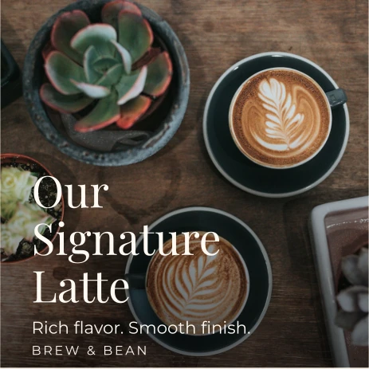
What to order
The signature latte
Make the first order feel familiar by showing a specific drink instead of an abstract promise.
- Objective
- Help a new visitor choose an order.
- Format
- Static Instagram post
- Call to action
- Save for your next coffee stop.
- Useful signal
- Saves and profile visits
Sample caption · Not published
Your next coffee stop, sorted. A closer look at the signature latte from this concept menu. Save this for the next time you’re deciding what to order.
Post 1 of 9
These are crops of the existing artwork. Offers and profile statistics in the original board are illustrative; the offer would need confirmed terms before publication.
View original boardSkincare concept
Self-initiated project · Sample strategyGlow Theory.
Clear information. Calm creative direction.
The artwork gives this skincare concept a soft, recognizable identity. I would build on that with content that helps someone understand what is being shown, find approved product details, and ask a useful question before choosing.
A business goal before a posting plan
Make product consideration feel clearer.
A hypothetical skincare brand using product photography, botanical imagery, and education-style layouts. Its actual catalogue, formulas, prices, and sales channel would need to be established in discovery.
- Primary objective
- Encourage visits to approved product information and specific product inquiries.
- Platform focus
- Instagram feed and Stories for product discovery and questions. Adapt approved assets to Facebook if included in scope.
- Brand voice
- Clear, calm, and approachable. Explain one thing at a time, without pressure or promises about skin outcomes.
- Creative direction
- Soft neutrals, botanical tones, close product details, generous spacing, and readable editorial type.
Audience hypothesis · To validate with the business
Who the content could speak to
Hypothesis: people comparing skincare products who want straightforward information before adding something to their routine.
Their questions may concern what the product is, its full ingredient list, approved directions, pack size, price, and where to buy. Their interest is useful information alongside a calm, coherent visual identity.
What I would check first
Ask the business which products it actually sells, what shoppers ask, and which information is approved. Review real account questions, product-page content, and comparable brands’ paths from a post to product information.
Use those findings to test the audience hypothesis. Have ingredient, usage, and benefit wording reviewed against approved product information; seek appropriate expert input for educational advice.
Four pillars, each with a job to do
Product details
Category, packaging, and approved product facts. Help people understand the product before considering it.
Routine information
Readable summaries of approved directions and common questions. Give people something useful to revisit.
Brand identity
Botanical images, product details, and a calm tone. Keep the concept recognizable without promising a result.
Questions & next steps
Product FAQs, a verified information link, and a clear inquiry route. Help people find what the artwork cannot explain.
Format follows the message
Use a still image for a product detail, a carousel for approved facts or FAQs, a Reel to show packaging from several angles, and Stories to collect product-information questions.
One clear next step
Move from “save the checklist” to “read the approved product page” or “ask a product question.” Keep one next step per post and check the destination before publishing.
Success metrics I would track · No results claimed
| Question | Metric | How it informs the next month |
|---|---|---|
| Is the category attracting relevant interest? | Reach, profile visits, and the topics of incoming questions | Review whether people understand the product category; refine the introduction if the same basic questions persist. |
| Is the information useful? | Saves, shares, and specific questions on information posts | Repeat useful explanations and turn recurring questions into approved FAQs. |
| Can people find the product details? | Product-information link taps and relevant product inquiries | Review whether the caption, destination, and product facts support the next step. |
| Which content deserves more production time? | Engagement relative to reach; video viewing data where available | Compare similar topics and formats, alongside the time needed to produce them. |
Record a baseline before publishing and compare equivalent periods. Interest in a post is not evidence of product efficacy or a skin result. Orders would need business records and a supported attribution method; link activity alone would not establish sales.
One post. One purpose.
Original artwork with sample captions, a proposed objective, and a useful signal for each design.
Glow TheoryConcept content preview
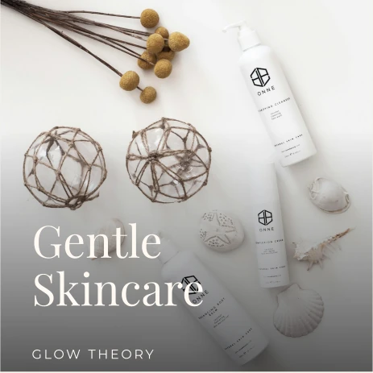
Product details
A product introduction
Make the product category visible through a clear product image.
- Objective
- Help visitors understand what is being shown.
- Call to action
- Open approved product information.
- Useful signal
- Product-information link taps and relevant questions
- Format
- Static Instagram concept post
Sample caption · Not published
Meet Glow Theory: a skincare concept with a calm visual direction. Before choosing a product, look for the full ingredient list, approved directions, and pack details. What information would you want to see first?
Post 1 of 9
These are crops of the supplied concept artwork. Profile figures, example claims, and offers in the original boards are illustrative.
View original boardFashion concept
Self-initiated project · Sample strategyStyle Muse.
Help people picture the piece.
The original feed has a warm editorial look. I would connect that visual direction to the decisions a shopper needs to make: how to wear an item, what details to check, and where to find the confirmed collection.
A business goal before a posting plan
Turn outfit inspiration into a clearer shopping decision.
A hypothetical fashion brand built around neutral outfits, accessories, and considered styling. Discovery would establish its real catalogue, sizes, prices, stock, and order process.
- Primary objective
- Encourage collection visits and specific item, sizing, or availability inquiries.
- Platform focus
- Instagram feed and Stories for outfit discovery, product details, and shopping questions. Facebook adaptations if agreed.
- Brand voice
- Confident, simple, and welcoming. Offer styling ideas without telling people they need to buy more.
- Creative direction
- Warm neutrals, outfit photography, accessory close-ups, simple layouts, and a consistent editorial feel.
Audience hypothesis · To validate with the business
Who the content could speak to
Hypothesis: people looking for wearable outfit ideas and pieces they can picture alongside clothes they already own.
They may enjoy neutral styling and small outfit details, while needing clearer size, fit, material, price, stock, and ordering information before choosing.
What I would check first
Ask the business about its actual shoppers, frequently requested sizes, item questions, and ordering friction. Review real messages, account insights, and how comparable brands explain fit and product details.
Test which styling questions recur. Confirm every product fact, size guide, material description, offer, delivery detail, and return policy before it appears in content.
Four pillars, each with a job to do
Collection details
Confirmed items, material information, sizing, and availability. Help shoppers know what they are considering.
Styling ideas
Outfit combinations and ways to use a piece with existing wardrobe staples. Make the item easier to picture.
Accessories & details
Close looks at finishing pieces and visual texture. Add practical detail alongside full outfits.
Questions & next steps
Fit FAQs, ordering information, and audience preferences. Connect inspiration to a verified collection or inquiry.
Format follows the message
Use a photo to introduce an outfit, a carousel for styling options or a size guide, a Reel for a real garment in movement, and Stories for preferences and confirmed stock updates.
One clear next step
Invite a save for styling inspiration, an item or sizing question for consideration, or a visit to the verified collection. Promotion posts need clear approved terms and one shopping destination.
Success metrics I would track · No results claimed
| Question | Metric | How it informs the next month |
|---|---|---|
| Are the outfits reaching relevant people? | Reach, profile visits, and the relevance of comments or inquiries | Compare outfit themes and identify which bring people to the profile with a useful interest. |
| Are styling ideas worth returning to? | Saves, shares, and outfit-related comments | Repeat useful combinations and turn common wardrobe questions into future topics. |
| Can shoppers move from inspiration to information? | Collection-link taps and item, sizing, or availability inquiries | Check whether product labels, the size guide, and the ordering route answer the next question. |
| Which formats justify the effort? | Engagement relative to reach; video viewing data where available | Compare similar product topics across formats and factor in production time. |
Record a baseline and compare equivalent periods. Saves suggest interest, not purchases. Orders or revenue would require business records and a supported attribution method; no sales target or achieved result is represented here.
One post. One purpose.
Original artwork with sample captions, a proposed objective, and a useful signal for each design.
Style MuseConcept content preview
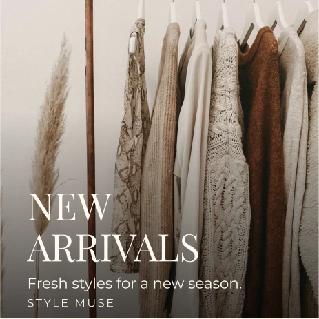
Collection details
A collection introduction
Make the collection category easy to recognize.
- Objective
- Help visitors understand the offering.
- Call to action
- Explore the confirmed collection.
- Useful signal
- Collection-link taps and item inquiries
- Format
- Static Instagram concept post
Sample caption · Not published
A new outfit idea starts with the pieces you can picture wearing. Explore this concept’s neutral collection direction, and check confirmed item and sizing details before choosing.
Post 1 of 9
These are crops of the supplied concept artwork. Profile figures, example claims, and offers in the original boards are illustrative.
View original boardFitness concept
Self-initiated project · Sample strategyStronger With Sam.
Give the motivation a useful next step.
The concept has a clear strength-training theme. I would pair its motivational tone with useful questions about the proposed offering, so someone can understand what support could involve before making an inquiry.
A business goal before a posting plan
Make the proposed support easier to understand.
A hypothetical fitness brand with training, equipment, habit, and motivational imagery. Discovery would establish whether it offers coaching, classes, or another service, along with the provider’s qualifications, format, and availability.
- Primary objective
- Encourage relevant questions about the confirmed offering and its inquiry process.
- Platform focus
- Instagram feed and Stories for content discovery, service explanations, and questions. Facebook adaptations if agreed.
- Brand voice
- Supportive and direct. Make room for questions without shame, pressure, or promises of a transformation.
- Creative direction
- Dark neutrals, green accents, training photography, strong hierarchy, and readable information layouts.
Audience hypothesis · To validate with the business
Who the content could speak to
Hypothesis: people interested in strength training who want clearer expectations before exploring support.
They may be looking for a realistic schedule and an approachable starting point. Their questions could concern format, cost, equipment needs, provider qualifications, and what is included.
What I would check first
Ask the business what it actually offers, who it can appropriately support, what questions it receives, and who provides the service. Review real inquiries, account insights, and comparable providers’ service explanations.
Validate the audience and the common barriers before planning. Confirm qualifications, service scope, availability, and inquiry steps; have workout, nutrition, or health-related advice reviewed by an appropriately qualified contributor.
Four pillars, each with a job to do
Training context
Explain the focus and, once confirmed, the format and environment. Help people understand what the account covers.
Everyday consistency
Questions about schedules, planning, and preferred content. Make space for realistic routines without prescribing health advice.
Support & expectations
Confirmed service scope, provider background, and the first conversation. Replace vague motivation with practical information.
Questions & next steps
Service FAQs and a verified inquiry route. Invite useful questions without promising fitness outcomes.
Format follows the message
Use a still image to introduce a theme, a carousel for confirmed service FAQs, a Reel for the actual provider or environment, and Stories to gather questions. Any exercise instruction needs qualified review.
One clear next step
Start with a content question, then invite people to read the confirmed service details or ask about format and availability. Keep individualized advice out of generic social captions.
Success metrics I would track · No results claimed
| Question | Metric | How it informs the next month |
|---|---|---|
| Does the audience understand the offering? | Profile visits and the relevance of content or service questions | Check whether people can distinguish general fitness content from the confirmed service. |
| Are the practical explanations useful? | Saves, shares, and questions on service or planning posts | Repeat explanations that clarify expectations and address recurring barriers. |
| Are people reaching the inquiry route? | Service-information link taps and relevant inquiries | Review the clarity of the service, scope, and first-contact process. Record inquiry topics without exposing private details. |
| What should the next batch prioritize? | Engagement relative to reach; video viewing data where available | Compare practical topics with motivational posts and balance usefulness against production effort. |
Record a baseline and compare equivalent periods. Inquiries are not proof of sign-ups, fitness improvement, or a health outcome. Bookings would require business records and attribution; this concept contains no client transformations, qualifications, or achieved results.
One post. One purpose.
Original artwork with sample captions, a proposed objective, and a useful signal for each design.
Stronger With SamConcept content preview
Training context
A training theme
Introduce the concept’s strength-training focus through its original photography.
- Objective
- Make the account topic clear.
- Call to action
- Share a training-content question.
- Useful signal
- Relevant training-content questions and profile visits
- Format
- Static Instagram concept post
Sample caption · Not published
A stronger routine starts with a clearer conversation. What would you like fitness content to explain: the training focus, the support available, or how a first conversation works?
Post 1 of 9
These are crops of the supplied concept artwork. Profile figures, example claims, and offers in the original boards are illustrative.
View original board03 / Sample social media audit · Brew & Bean
Before more content,
a closer look.
A sample review of the Brew & Bean concept mockup. This shows how I would identify practical gaps and decide what to address first.
What’s already working
A consistent palette, recognizable coffee photography, and a mix of product, atmosphere, and behind-the-counter images. The identity feels cohesive and the café category is clear.
This review uses the supplied design board, not a live account. Posting frequency, response times, audience behavior, and performance cannot be established from a nine-post mockup.
01The profile & path to a visitPriority: first
Observed in the mockup
The bio explains the café category and includes an illustrative location and website. Hours and a verified menu or directions link are not visible.
Proposed improvement
Confirm the real location, hours, and destination link. Make the bio explain what the café offers, then organize useful highlights around Menu, Visit, and FAQs.
02Content that helps people decidePriority: first
Observed in the mockup
The grid includes appealing products, café imagery, quotes, an offer, and a thank-you post. Practical information about the menu, prices, and visiting is limited.
Proposed improvement
Add an approved menu guide, a first-visit carousel, and answers to actual customer questions. Keep atmospheric posts, but give the mix more decision-making value.
03Messaging & calls to actionPriority: before publishing
Observed in the mockup
The offer artwork shows a discount, but the full eligibility, dates, and redemption terms are not on the board. Several designs have a message without an explicit next step.
Proposed improvement
Confirm the offer before using it. Add the approved terms to the caption and use one relevant CTA per post. Avoid sending people to a link or offer that has not been verified.
04Consistency & audience responsePriority: validate, then review
What the board can’t establish
A coordinated grid shows visual consistency. It does not show a sustainable schedule, useful conversations, or how people respond to each format.
Proposed improvement
Check recent publishing history, replies, and insights on a real account. Agree on a manageable schedule, record a baseline, and review topics and actions after the first month.
03 / Sample social media audit · Glow Theory
Before more content,
a closer look.
A sample review of the Glow Theory concept board, with practical gaps and proposed priorities.
What’s already working
Soft neutrals and botanical imagery connect the grid. Product close-ups and editorial information layouts give the concept a clear skincare category and several useful starting points.
This review uses the supplied design board, not a live account. It cannot establish posting frequency, response times, audience behavior, or performance. Captions and links would be checked separately.
01The product-information pathPriority: first
Observed in the mockup
The board contains product imagery, but the nine designs do not provide a complete catalogue, ingredient lists, approved directions, prices, or a verified purchase route.
Proposed improvement
Confirm the product catalogue and destination links. Organize Product details, Directions, and FAQs around approved information, with a clear bio route to it.
02Education & example claimsPriority: before publishing
Observed in the mockup
The grid includes skincare-tip and ingredient-themed layouts, plus slogans about healthy or radiant skin. The artwork does not substantiate ingredients, advice, or outcomes.
Proposed improvement
Review every ingredient, usage, and benefit statement. Replace unsupported wording with approved product facts and seek qualified review where educational advice is needed.
03A useful balance of topicsPriority: first
Observed in the mockup
Product, botanical, lifestyle, and slogan designs create a coherent mood. The board alone gives limited answers to practical product questions.
Proposed improvement
Keep the visual identity and add readable product-information and FAQ carousels. Give brand messages a supporting role within the mix.
04Questions & measurementPriority: validate, then review
Observed in the mockup
A nine-post design board cannot show which questions people ask, whether links work, how promptly replies are handled, or which topics influence consideration.
Proposed improvement
Review a real account and its approved information links. Record a baseline, agree who handles product questions, and use the first month’s actual response to refine the plan.
03 / Sample social media audit · Style Muse
Before more content,
a closer look.
A sample review of the Style Muse concept board, with practical gaps and proposed priorities.
What’s already working
The neutral palette and editorial layouts hold together. Outfits, accessories, texture, styling text, and community messages give the grid visual variety within a recognizable fashion identity.
This review uses the supplied design board, not a live account. It cannot establish posting frequency, response times, audience behavior, or performance. Captions and links would be checked separately.
01From outfit to item detailsPriority: first
Observed in the mockup
The grid shows outfits and accessories, but it does not establish item names, a real catalogue, measurements, prices, stock, or a verified order route.
Proposed improvement
Confirm the catalogue and give each product post a useful identity and destination. Make Collection, Sizes, and Ordering information easy to find.
02Styling ideas with practical valuePriority: first
Observed in the mockup
The board includes a neutral-styling tip and outfit photography. A single image gives limited ways to compare combinations or understand the featured item.
Proposed improvement
Expand useful outfit topics into styling carousels and real garment footage. Add confirmed size and material information where it helps the decision.
03The sample sale & its termsPriority: before publishing
Observed in the mockup
One original design shows an “up to 50%” promotion. The board does not establish eligible items, dates, stock, exclusions, or an active sale.
Proposed improvement
Keep the artwork illustrative here. For a real promotion, secure approved terms and a valid destination, then explain eligibility and timing in the caption.
04Community questions & actual responsePriority: validate, then review
Observed in the mockup
Brand and thank-you layouts support the tone, but they do not show real customer feedback, a buying history, or which styling topics people find useful.
Proposed improvement
Collect genuine fit and styling questions, get consent for any future customer content, and compare saves, link activity, and relevant item inquiries against a baseline.
03 / Sample social media audit · Stronger With Sam
Before more content,
a closer look.
A sample review of the Stronger With Sam concept board, with practical gaps and proposed priorities.
What’s already working
Dark neutrals, green accents, equipment photography, and direct typography make the training category recognizable. Habit and motivational layouts give the feed a consistent tone.
This review uses the supplied design board, not a live account. It cannot establish posting frequency, response times, audience behavior, or performance. Captions and links would be checked separately.
01Explain what support meansPriority: first
Observed in the mockup
Training imagery and the brand name communicate a theme. The artwork does not establish an actual service, its format, price, provider qualifications, or what a first inquiry involves.
Proposed improvement
Confirm the offering before promoting it. Add clear service information, provider background, and a verified inquiry route, using only facts the business can support.
02Training layouts & qualified reviewPriority: before publishing
Observed in the mockup
The grid includes a workout-themed layout, habit imagery, and motivational statements. The board does not validate programming, nutrition advice, suitability, or results.
Proposed improvement
Keep this portfolio material conceptual. For real publishing, review instructional or health-related content with an appropriately qualified contributor and avoid outcome promises.
03The environment shown in the artworkPriority: before publishing
Observed in the mockup
Equipment and a training-space image help establish the visual direction. These are stock images, not evidence of an owned facility, real coaching session, or available equipment.
Proposed improvement
Use approved real footage for service and environment posts. Confirm location, equipment requirements, and format rather than treating stock imagery as proof.
04Useful content alongside motivationPriority: validate, then review
Observed in the mockup
The grid contains several motivational messages, but it cannot show genuine audience questions, inquiry quality, publishing consistency, or which topics are useful.
Proposed improvement
Add confirmed service FAQs and approachable question prompts. Review real response against a baseline, and let practical needs guide the next month’s mix.
04 / Sample 30-day content plan · Brew & Bean
A month with
a clear direction.
A proposed first month for Brew & Bean. Three feed posts a week, supporting Stories, and time to learn from what people actually do.
Help a first-time visitor feel ready to visit.Move from discovery to useful information, then a clear next step. Day numbers are planning slots, not a campaign that ran.
12planned feed posts4proposed Reels3Story days / week
Introduce the café.
Start with what someone needs to recognize the business, picture the experience, and find it.
Meet the signature latte
Static photo · Existing conceptGive the café a recognizable product and help a new visitor choose.
CTA: Save for your next coffee stop.
A look around the space
Proposed Reel · Footage neededA short walkthrough, using confirmed details about the space and experience.
CTA: Send to your coffee companion.
Your first-visit guide
Proposed carouselVerified address, opening hours, directions, and a clear menu destination.
CTA: Save the visit information.
Supporting Stories: Repurpose these topics on three days, with a drink-preference poll and the confirmed visit link. Keep each set to a few useful frames.
Make choosing easier.
Give people more specific reasons to consider a visit and useful answers before they ask.
Coffee + pastry pairing
Static photo · Existing conceptShow how two menu items could fit one visit, after checking availability.
CTA: Save your pairing idea.
From espresso to latte
Proposed Reel · Footage neededA simple preparation sequence, with a short caption explaining what’s shown.
CTA: Reply with your coffee order.
Questions before you visit
Proposed carouselAnswer genuine questions the owner receives. Include only confirmed amenities.
CTA: Ask a question we haven’t covered.
Supporting Stories: A pairing poll, a preparation detail, and a question box. Turn recurring questions into future content.
Build familiarity.
Make the product and the people behind it feel recognizable, while keeping the next step practical.
Good coffee, good company
Static photo · Existing conceptShow the social side of a café visit without inventing customer stories or reviews.
CTA: Share with a friend.
A detail behind the drink
Proposed Reel · Footage neededShow one real preparation detail, supported by the owner’s explanation.
CTA: Tell us what you’d like to see next.
Pick your next order
Proposed carouselCompare approved menu choices by taste or preference, using real descriptions.
CTA: Open the confirmed menu.
Supporting Stories: A menu preference poll, a behind-the-counter clip, and a reminder of current hours.
Make the next step clear.
Bring attention back to visiting and use audience questions to shape the next plan.
The pairing worth revisiting
Static photo · Existing conceptReturn to a practical product topic. An approved offer could replace this slot if the business has one.
CTA: Ask about current availability.
A coffee stop in a few seconds
Proposed Reel · Footage neededA short visit sequence ending with the verified location and hours.
CTA: Save the location for later.
What would help you choose?
Static post · Sample messageInvite specific questions about the menu or visiting. Use those answers in the next month.
CTA: Leave a menu or visit question.
Supporting Stories: Answer actual questions, share confirmed visit details, and ask what followers would like to see next.
Review, then plan again.
The last two days are for learning from real data, not adding posts just to fill a calendar.
Day 29 · Review
Compare reach, saves, shares, profile actions, and relevant inquiries with the starting baseline. Identify useful topics, recurring questions, and production bottlenecks.
Day 30 · Refine
Choose what to repeat, improve, or retire. Confirm next month’s priorities, available footage, business updates, and approval dates.
DiscoverRecognize the caféConsiderFind useful informationActAsk, click, or plan a visitLearnUse the real response
The 12 feed slots include 4 proposed Reels and 8 static or carousel posts. Reels are production briefs; video footage and the new carousel designs are not included in the original concept artwork. Timing and volume would be agreed around the business’s capacity.
04 / Sample 30-day content plan · Glow Theory
A month with
a clear direction.
A proposed first month for Glow Theory. Three feed posts a week, supporting Stories, and a review using actual response.
Help someone understand the product before choosing.Move from discovery to useful information, then a relevant next step. Day numbers are planning slots, not a campaign that ran.
12planned feed posts4proposed Reels3Story days / week
Introduce the category.
Make the product topic and information route easy to recognize.
Meet the product category
Static photo · Existing conceptUse the original product image with a category description drawn from the approved catalogue.
CTA: Open the approved product information.
A closer packaging look
Proposed Reel · Footage neededCapture the real packaging and readable label details. Use confirmed product names and avoid adding benefit claims.
CTA: Save for a closer look.
Before choosing a product
Proposed carouselOrganize where to find ingredients, directions, pack size, price, and the verified buying route.
CTA: Save the information checklist.
Supporting Stories: A product-information question box, a packaging detail, and the verified information link, spread across three days.
Make the details readable.
Answer practical questions with information the business can approve.
An ingredient topic, checked
Static layout · Existing conceptUse the original ingredient-led design only after confirming the formula and reviewing its wording.
CTA: Check the full approved ingredient list.
What is on the label?
Proposed Reel · Footage neededShow where the real label provides information, using accurate close-ups and approved copy.
CTA: Open the full product details.
Directions in a clear layout
Proposed carouselPresent the product’s approved directions and cautions without adding an invented routine or personalized advice.
CTA: Read and save the approved directions.
Supporting Stories: An information-format poll, a label-detail frame, and an invitation to ask a product question.
Build familiarity through details.
Keep the calm identity while making the content more useful.
Packaging in focus
Static photo · Existing conceptUse the original dropper and packaging image to revisit product facts; this artwork is not a promotion.
CTA: Ask a specific product question.
The visual world of the product
Proposed Reel · Footage neededFilm approved packaging and brand details. Keep the message focused on identity rather than skin outcomes.
CTA: Share the product detail you want explained.
Questions shoppers actually ask
Proposed carouselAnswer genuine product and ordering questions supplied by the business, with reviewed wording.
CTA: Open the approved FAQ or ask a question.
Supporting Stories: A product-question prompt, one approved FAQ answer, and a reminder of the verified information route.
Make the next step useful.
Bring interest back to approved information and collect questions for the next month.
A calm brand moment
Static layout · Existing conceptUse the original identity layout with a caption that makes no skin-result promise.
CTA: Tell us which product detail matters to you.
From post to product details
Proposed Reel · Footage neededWalk through the verified information page using an approved screen recording or real product footage.
CTA: Read the full product information.
What still needs explaining?
Static post · Sample messageInvite specific product questions and group them for the next approved FAQ batch.
CTA: Leave a product-information question.
Supporting Stories: Reviewed answers, an information link reminder, and a poll about the next topic to explain.
Review, then plan again.
Days 29–30 are for reviewing real response and agreeing on the next plan.
Day 29 · Review
Compare saves, shares, profile actions, approved information-link taps, and relevant product inquiries against the starting baseline. Group recurring questions and check whether replies need clearer approved guidance.
Day 30 · Refine
Repeat useful explanations, improve unclear destinations, and confirm next month’s product updates, review needs, footage, and approval dates.
DiscoverRecognize the product categoryConsiderFind approved informationActRead details or ask a questionLearnUse the real response
The 12 feed slots include 4 proposed Reels and 8 static or carousel posts. The schedule is illustrative and would depend on discovery, approved business facts, assets, review capacity, and availability. Reels need new footage; proposed carousels are new production briefs. Neither is supplied as completed content.
04 / Sample 30-day content plan · Style Muse
A month with
a clear direction.
A proposed first month for Style Muse. Three feed posts a week, supporting Stories, and a review using actual response.
Help someone picture an item in their own wardrobe.Move from discovery to useful information, then a relevant next step. Day numbers are planning slots, not a campaign that ran.
12planned feed posts4proposed Reels3Story days / week
Introduce the collection direction.
Connect the editorial look to confirmed items and a clear information route.
Meet the collection
Static photo · Existing conceptUse the original clothing-rack image with confirmed category and collection details.
CTA: Explore the verified collection.
A piece in movement
Proposed Reel · Footage neededShow a real garment from several angles. Identify the item and use confirmed size information.
CTA: Ask an item or sizing question.
Before placing an order
Proposed carouselExplain where to find the size guide, availability, prices, delivery details, and approved ordering route.
CTA: Save the ordering checklist.
Supporting Stories: A style-preference poll, a confirmed item detail, and the collection link on three days.
Make styling easier to picture.
Give an outfit idea enough detail to be useful beyond the image.
A neutral styling idea
Static layout · Existing conceptUse the original styling-tip design to invite combinations with pieces the audience already owns.
CTA: Save the outfit idea.
One piece, two combinations
Proposed Reel · Footage neededFilm two actual looks with the same confirmed item and name the supporting pieces.
CTA: Tell us which combination you prefer.
Read the size guide
Proposed carouselPresent the business’s approved measurements and explain its own guide clearly, without inventing fit claims.
CTA: Open the approved size guide.
Supporting Stories: An outfit-combination poll, one approved sizing answer, and a question box for item details.
Bring the details closer.
Use accessories and texture to support a considered choice.
Finish the outfit
Static photo · Existing conceptUse the original accessory flatlay with confirmed item names and availability.
CTA: Ask about the featured item.
A closer garment look
Proposed Reel · Footage neededFilm the real garment’s texture and construction; use only confirmed material and care details.
CTA: Read the product details.
Fit and ordering questions
Proposed carouselAnswer genuine questions about the approved collection, size guide, and ordering process.
CTA: Ask a question we have not covered.
Supporting Stories: A detail close-up, a verified availability update, and one answer to an actual shopping question.
Connect inspiration to a next step.
Revisit useful looks and learn what shoppers still need to know.
An outfit to revisit
Static photo · Existing conceptReturn to an original outfit image with a different styling question. A sale replaces this only if its terms are approved.
CTA: Save for your next outfit idea.
Find the featured piece
Proposed Reel · Footage neededShow the real path from an outfit post to its verified item information and size guide.
CTA: Visit the confirmed collection.
What would you like styled next?
Static post · Sample messageInvite wardrobe and item questions for the next content batch without claiming customer milestones.
CTA: Leave a styling question.
Supporting Stories: Useful answers, a collection-link reminder, and a poll for the next styling topic.
Review, then plan again.
Days 29–30 are for reviewing real response and agreeing on the next plan.
Day 29 · Review
Compare outfit saves, shares, profile actions, collection-link taps, and relevant item or sizing inquiries with the starting baseline. Group questions that suggest missing product information.
Day 30 · Refine
Repeat useful styling themes, improve unclear item details, and confirm stock, collection changes, garment footage, and approval dates for the next plan.
DiscoverRecognize the collectionConsiderPicture the piece & check detailsActVisit the collection or askLearnUse the real response
The 12 feed slots include 4 proposed Reels and 8 static or carousel posts. The schedule is illustrative and would depend on discovery, approved business facts, assets, review capacity, and availability. Reels need new footage; proposed carousels are new production briefs. Neither is supplied as completed content.
04 / Sample 30-day content plan · Stronger With Sam
A month with
a clear direction.
A proposed first month for Stronger With Sam. Three feed posts a week, supporting Stories, and a review using actual response.
Help someone ask an informed question about support.Move from discovery to useful information, then a relevant next step. Day numbers are planning slots, not a campaign that ran.
12planned feed posts4proposed Reels3Story days / week
Introduce the focus.
Make the content theme clear, then establish the actual offering before asking for inquiries.
Meet the training theme
Static photo · Existing conceptUse the original training image to introduce the concept’s direction, without claiming a real session or result.
CTA: Share a training-content question.
Meet the actual provider
Proposed Reel · Footage neededFilm the real provider introducing the confirmed offering and supported qualifications, after discovery.
CTA: Read the approved service details.
What would support include?
Proposed carouselExplain the confirmed format, scope, schedule, price route, and first-contact process. Do not invent a programme.
CTA: Save the service-information checklist.
Supporting Stories: A question about preferred content, a confirmed service fact, and the verified information link across three days.
Clarify expectations.
Answer the practical questions that come before an inquiry.
Equipment in context
Static photo · Existing conceptUse the original equipment image as a concept theme. Actual equipment requirements would be confirmed separately.
CTA: Ask about the confirmed format.
How the first conversation works
Proposed Reel · Footage neededHave the real provider explain the approved inquiry process and what information they need.
CTA: Ask a service-scope question.
Questions before starting
Proposed carouselAnswer genuine questions about cost, format, availability, and provider background using approved facts.
CTA: Read the FAQ or ask a question.
Supporting Stories: A service-format poll, one approved FAQ answer, and a question box for practical expectations.
Make the routine conversation realistic.
Use the supportive voice to learn what information people need.
A consistency prompt
Static layout · Existing conceptUse the original motivation design with a question about scheduling or preferred content, without a fitness promise.
CTA: Tell us which planning topic would help.
The real format or environment
Proposed Reel · Footage neededFilm the actual setting or service format once confirmed. Do not substitute stock images for evidence.
CTA: Ask about the confirmed setup.
What to ask a provider
Proposed carouselOrganize questions about qualifications, scope, format, and expectations. Avoid individualized workout or nutrition advice.
CTA: Save the questions for a first conversation.
Supporting Stories: A scheduling-question prompt, a verified format detail, and an answer to a real service question.
Offer a clear next conversation.
Connect the supportive tone to verified information and useful inquiries.
A next-step message
Static layout · Existing conceptUse the original CTA layout with reviewed copy about the confirmed support and inquiry route.
CTA: Ask about format and availability.
From interest to inquiry
Proposed Reel · Footage neededShow the approved contact path and what happens next, without implying a booking or promised outcome.
CTA: Use the verified inquiry route.
What still feels unclear?
Static post · Sample messageInvite practical questions for the next FAQ batch and route individualized concerns to the appropriate provider.
CTA: Leave a service-information question.
Supporting Stories: Reviewed FAQ answers, a contact-path reminder, and a poll about the next practical topic.
Review, then plan again.
Days 29–30 are for reviewing real response and agreeing on the next plan.
Day 29 · Review
Compare saves, shares, profile actions, service-information link taps, and relevant inquiries against the baseline. Review recurring practical questions and production or approval bottlenecks.
Day 30 · Refine
Repeat useful service explanations, improve unclear next steps, and confirm actual availability, provider review time, real footage, and approval dates for the next plan.
DiscoverRecognize the training focusConsiderUnderstand the confirmed supportActAsk an informed service questionLearnUse the real response
The 12 feed slots include 4 proposed Reels and 8 static or carousel posts. The schedule is illustrative and would depend on discovery, approved business facts, assets, review capacity, and availability. Reels need new footage; proposed carousels are new production briefs. Neither is supplied as completed content.
05 / Services
Support that fits
what you need.
You might need someone to manage the ongoing work, better content for your own schedule, or a clear direction before starting.
Full social media management
For businesses that want help with the ongoing content and account workflow.
- Audience research, direction, and monthly planning
- Content creation, captions, and agreed video editing
- Approval, scheduling, and publishing
- Agreed community support and performance review
Content creation
For businesses that manage their own accounts but need purposeful, consistent content.
- Creative direction that fits the brand
- Post and carousel design
- Reel editing from supplied footage
- Captions and relevant calls to action
Strategy & account audit
For businesses unsure what to post or why the current approach feels unclear.
- Profile, messaging, and content review
- Audience and competitor research
- Priority recommendations and content pillars
- A practical plan and measurement approach
A focused first project
For businesses that want to begin with a defined piece of work before monthly support.
- A clear brief and agreed business objective
- A small content batch or focused planning task
- Defined deliverables and an approval point
- A straightforward handover and next-step discussion
The scope depends on your platforms, content volume, and the assets you can provide. I’ll confirm deliverables, approvals, and pricing with you before work starts.
The toolkit
CanvaCapCutMeta Business SuiteFacebookInstagramTikTokNotionFigmaMicrosoft Office
06 / My management process
You’ll know
what happens next.
A proposed workflow for working together, from understanding your business to reviewing what the content actually does.
01 / Discovery
Start with the business.
We discuss what you offer, who you serve, what you’re already doing, and where you need support. We also agree on access, deliverables, and who approves content.
What you receiveA clear brief, an agreed scope, and the information needed to get started.
02 / Research
Understand the context.
I review your profiles, current content, audience questions, available insights, and relevant competitors. Your customer knowledge helps keep the research grounded.
What you receivePriority observations, audience hypotheses, and the gaps to address first.
03 / Strategy
Give the content direction.
I connect the business objective to an audience, content pillars, messaging, formats, and useful metrics. Each choice should have a reason behind it.
What you receiveA focused content direction and a measurement plan to approve.
04 / Planning
Make the month manageable.
I map topics, formats, captions, asset needs, and approval dates into a calendar. The schedule reflects the content and footage we can realistically produce.
What you receiveA content calendar with purpose, timing, and next steps for each planned post.
05 / Content creation
Turn the plan into content.
I create designs, edit agreed footage, and write captions that fit your voice. Business facts, offers, and product details come from approved information.
What you receiveA reviewable content batch with draft captions and calls to action.
06 / Approval
Review before it goes live.
You see the content and captions before publication. We collect feedback, check the details, and complete the revisions included in our agreed scope.
What you receiveAn approved batch and a clear record of what is ready to publish.
07 / Publishing
Publish with the details checked.
I schedule or publish approved content, check platform formatting and links, and handle the community tasks we agreed. Questions needing your input are flagged.
What you receiveContent published to the agreed schedule, with visibility into its status.
08 / Performance review
Use the response to improve.
I review the actual data against the starting baseline and objective. We discuss useful content, audience questions, and changes worth testing in the next period.
What you receiveA plain-language review and specific recommendations for the next plan.
What you can expect from me.
Every post has a job.
There’s a reason for the topic, format, and next step, whether that’s useful information or a clearer offer.
You’re kept in the loop.
You know what’s being worked on, what needs your input, and what’s ready for approval.
The business comes first.
Content decisions consider your audience, priorities, available assets, and practical limits.
The scope is clear.
We agree on the support you need and the deliverables before adding more work to the plan.
 Mae, behind Mae Socials.
Mae, behind Mae Socials.07 / About me
Creative work.
Thoughtful decisions.
I’m Mae Fatima Magale, an emerging Social Media Manager. I’m building my client experience, and I take the planning behind the content as seriously as the content itself.
Before deciding what a post should look like, I want to understand who it’s for, what they need to know, and how it connects to the business. That’s the approach I bring to research, planning, design, captions, and page management.
My portfolio includes actual Facebook page work and self-initiated concepts. The concepts let me show how I would approach a brief while I continue building evidence from real projects.
See how I approach a projectEducation & background
BS in Information Systems
Talibon Polytechnic College
Senior High School · TVL-ICT
North Coast Bohol Institute Inc.
08 / Work with me
Tell me about
your business.
You don’t need to have the whole strategy figured out. Tell me what you do, what you’re currently posting, and where you could use some help. We can work out a sensible starting point from there.
magalemae@gmail.com